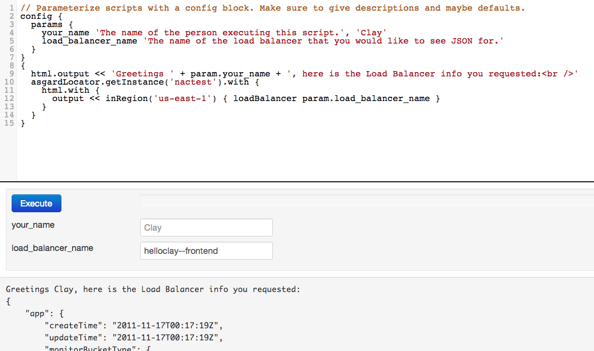

Created by Clay McCoy
Why not use all the cool toys together?
... and never finish
Manage client side static resources like images, js, and css files.
Define dependencies between the resources.
/grails-app/conf/ApplicationResources.groovymodules = {
app {
dependsOn 'jquery, angularResource, bootstrap'
resource url: 'css/app.css'
resource url: 'js/angular/app/js/angularApp.js'
}
bootstrap {
dependsOn 'jquery'
resource url: 'js/bootstrap/css/bootstrap.min.css'
resource url: 'js/bootstrap/js/bootstrap.min.js'
}
angular {
resource id: 'js', url: [dir: 'js/angular/app/lib/angular',
file: "angular.js"], nominify: true
}
angularResource {
dependsOn 'angular'
resource id: 'js', url: [dir: 'js/angular/app/lib/angular',
file: "angular-resource.js"], nominify: true
}
}
Bring them into a page by specifying the top level module.
CoffeeScript is a little language that compiles into JavaScript. ...CoffeeScript is an attempt to expose the good parts of JavaScript in a simple way.
fill = (container, liquid = "coffee") ->
"Filling the #{container} with #{liquid}..."zip = lottery.drawWinner?().address?.zipcodeawardMedals = (first, second, others...) ->
gold = first
silver = second
rest = othersnumbers[0..2]...with old version of CoffeeScript Resources plugin to write tests in CoffeeScript.
/grails-app/conf/BuildConfig.groovy runtime ":coffeescript-resources:0.2"
// runtime ":coffeescript-resources:0.3.2"
/grails-app/conf/Config.groovycoffeescript.modules = {
angularApp {
String src = 'src/coffee/angular'
files "${src}/services", "${src}/filters", "${src}/controllers", "${src}/app"
output 'angular/app/js/angularApp.js'
}
angularTests {
String src = 'src/coffee/angular'
files "${src}/servicesSpec", "${src}/filtersSpec", "${src}/controllersSpec"
output 'angular/test/unit/angularTests.js'
}
}
class PublisherSpec extends Specification {
Publisher publisher = new Publisher()
Subscriber subscriber = Mock()
def setup() {
publisher << subscriber
}
def "should send messages to subscribers"() {
when:
publisher.send("hello")
then:
1 * subscriber.receive("hello")
}
}
Pretty easy conversion with a few gotchas due to CoffeeScript's lexical scoping.
class PhoneController {
def phoneService
// pass through actions are like like AngularJS routes
// they map a URL to a template and AngularJS controller
def list() { [jsController: 'PhoneListCtrl'] }
def show() { [jsController: 'PhoneDetailCtrl'] }
// end point for restful call
def query(String id) {
if (id) {
render phoneService.getPhone(id)
} else {
render phoneService.allPhones()
}
}
}
/src/coffee/angular/controllers.coffee@PhoneListCtrl = ($scope, Grails) ->
$scope.phones = Grails.getResource($scope).query({action: 'query'})
$scope.orderProp = 'age'
@PhoneDetailCtrl = ($scope, Grails) ->
$scope.phone = Grails.getResource($scope).get {action: 'query'}, (phone) ->
$scope.setMainImage(phone.images[0])
$scope.setMainImage = (imageUrl) ->
$scope.mainImageUrl = imageUrl
Templates are GSPs
Grails params become AngularJS scope in main.gsp using ng-init
Grails and AngularJS both manipulate template.
An AngularJS service named Grails.
/src/coffee/angular/services.coffeeangular.module('phonecatServices', ['ngResource']).service 'Grails', ($resource) ->
getResource: (scope) ->
$resource "/#{appName}/:controller/:action/:id",
{controller: scope.controller || '', action: scope.action || '', id: scope.id || ''}
Grails and AngularJS both have great testing support.
Angular Unit Testing
describe 'service', ->
setup = {}
beforeEach module 'phonecatServices'
beforeEach inject (_$httpBackend_, $rootScope, Grails) ->
setup.httpBackend = _$httpBackend_
setup.scope = $rootScope.$new()
setup.grails = Grails
describe 'Grails', ->
it 'should call url with controller, action, and id', ->
setup.httpBackend.expectGET('/phonecat/grailsControllerName/grailsActionName/grailsId').respond()
setup.scope.controller = 'grailsControllerName'
setup.scope.action = 'grailsActionName'
setup.scope.id = 'grailsId'
setup.grails.getResource(setup.scope).get()
it 'should call url with only controller and action', ->
setup.httpBackend.expectGET('/phonecat/grailsControllerName/grailsActionName').respond()
setup.scope.controller = 'grailsControllerName'
setup.scope.action = 'grailsActionName'
setup.grails.getResource(setup.scope).get()
it 'should call url with only controller and specified action', ->
setup.httpBackend.expectGET('/phonecat/grailsControllerName/alternateGrailsActionName').respond()
setup.scope.controller = 'grailsControllerName'
setup.scope.action = 'grailsActionName'
setup.grails.getResource(setup.scope).get {action: 'alternateGrailsActionName'}
it 'should call url without controller, action, or id', ->
setup.httpBackend.expectGET('/phonecat').respond()
setup.grails.getResource(setup.scope).get()
Angular End-To-End Testing
class PhoneDetailSpec extends GebSpecWithDefaultConfig {
def setup() {
to PhoneDetailPage, 'nexus-s'
}
def 'should display nexus-s page'() {
expect: phoneName == 'Nexus S'
}
def 'should display the first phone image as the main phone image'() {
expect: mainPhoneImage.endsWith('/phonecat/images/phones/nexus-s.0.jpg')
}
def 'should swap main image if a thumbnail image is clicked on'() {
when: phoneThumb(3).click()
then: mainPhoneImage.endsWith('/phonecat/images/phones/nexus-s.2.jpg')
when: phoneThumb(1).click()
then: mainPhoneImage.endsWith('/phonecat/images/phones/nexus-s.0.jpg')
}
}
class PhoneDetailPage extends PhonePage {
static action = "show"
static url = "$controller/$action" // This seems to only be needed on pages that are called with an id.
static content = {
phoneName { $('h1').text() }
mainPhoneImage { $('img.phone').@src }
phoneThumb { int index -> $(".phone-thumbs li:nth-child(${index}) img") }
}
}
Not as easy as writing them.
And now for something not completely contrived.
https://github.com/claymccoy/GrailsWithAngularAndCoffeeScript
http://claymccoy.blogspot.com/2012/09/grails-with-angularjs-and-coffeescript.html